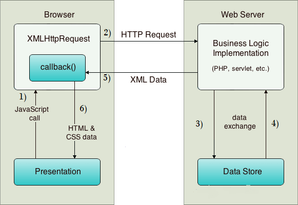

AJAX即“Asynchronous Javascript And XML”（异步JavaScript和XML），是指一种创建交互式网页应用的网页开发技术。
AJAX = 异步 JavaScript和XML（标准通用标记语言的子集）。
AJAX 是一种用于创建快速动态网页的技术。
优点：
不需要插件支持
用户体验极佳
提升Web程序性能
减轻服务器和宽带的负担
缺点：
前进后退按钮被破坏
搜索引擎的支持不够
开发调试工具缺乏
1.创建 XMLHttpRequest 对象的语法：
1 variable=new XMLHttpRequest();
2.老版本的 Internet Explorer （IE5 和 IE6）使用 ActiveX 对象：
1 variable=new ActiveXObject("Microsoft.XMLHTTP");

正如您在上面的示例中所看到的，XMLHttpRequest对象起着重要作用。
POST和GET的区别：
1.POST主要用来发送数据，GET主要用来接受数据；
2.PSOT发送数据的安全性较好，而GET较差；
3.POST发送数据不限制大小，而GET大小受限2~100k。
什么时候用GET和POST：在数据获取时用GET方式，在操作数据时应使用POST方式。
1.GET连接
1 function ajaxGet(url,cb,data){
2 data = data || {};
3 var str = "";
4 for(var i in data){
5 str += `${i}=${data[i]}&`;
6 }
7 var d = new Date();
8 url = url + "?" + str + "__qft="+d.getTime();
9
10 var xhr = new XMLHttpRequest();
11 xhr.open("get",url,true);
12 xhr.onreadystatechange = function(){
13 if(xhr.readyState == 4 && xhr.status == 200){
14 cb(xhr.responseText)
15 }
16 }
17 xhr.send();
18 }2.POST连接
1 function ajaxPost(url,callback,data){
2 data = data || {};
3 var str = "";
4 for(var i in data){
5 str += `${i}=${data[i]}&`;
6 }
7
8 var xhr = new XMLHttpRequest();
9 xhr.open("POST",url,true);
10 xhr.onreadystatechange = function(){
11 if(xhr.readyState == 4 && xhr.status == 200){
12 callback(xhr.responseText);
13 }
14 }
15 xhr.setRequestHeader("Content-Type","application/x-www-form-urlencoded");
16 xhr.send(str);
17 } 当发送一个请求后，客户端需要确定这个请求什么时候会完成，因此，XMLHttpRequest对象提供了onreadystatechange事件机制来捕获请求的状态，继而实现响应。
当请求被发送到服务器时，我们需要执行一些基于响应的任务。
每当readyState改变时，就会触发onreadystatechange事件。
readyState属性存有 XMLHttpRequest 的状态信息。
回调函数是一种以参数形式传递给另一个函数的函数。
如果您的网站上存在多个 AJAX 任务，那么您应该为创建 XMLHttpRequest 对象编写一个标准的函数，并为每个 AJAX 任务调用该函数。
该函数调用应该包含 URL 以及发生onreadystatechange事件时执行的任务（每次调用可能不尽相同）